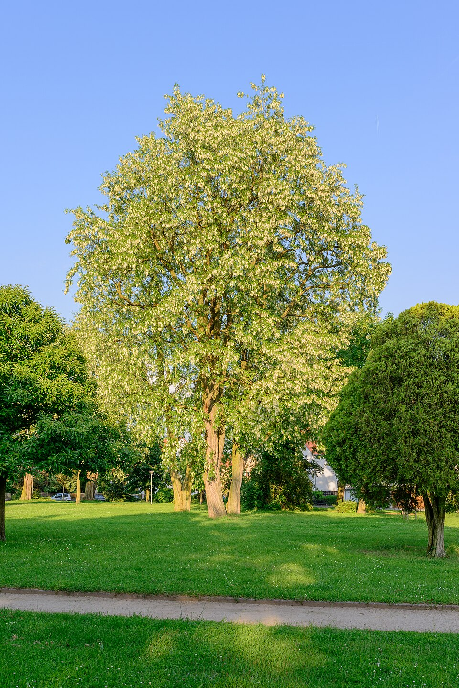

Robinia — Black locust (Acacia)
A scrappy nitrogen-pumping coloniser with razor thorns and wood so hard it outlasts the fence posts — fast, aggressive, and utterly indifferent to where she was planted.
Combat flavor
Robinia is the fastest-striking bruiser on the roster — hard, dense wood means heavy hits, and her thorns make close contact painful for any attacker. Her nitrogen-fixing could inspire a support aura that buffs adjacent tree allies, while invasive spread flavours area-denial abilities.
Real-world facts
Typical / max height12–18 m typical; up to 25–30 m max (occasionally recorded to ~30 m / 100 ft)
LifespanUp to ~120 years (short-lived for a tree)
Wood~740 kg/m³ air-dry; Janka hardness ~7,560 N (1,700 lbf) — harder than White Oak by ~30%; one of the hardest domestic North American hardwoods
Growth speedFast
Ecology / notable traitsNative to Appalachian USA; nitrogen-fixing via root-nodule bacteria (thrives on poor soils and enriches them); armed with paired thorns at each leaf base; highly invasive worldwide — 2nd most planted deciduous tree globally; allelopathic root secretions suppress competitors; fragrant white flowers attract pollinators; bark and seeds toxic to livestock and humans; declared invasive across Europe
Gallery
